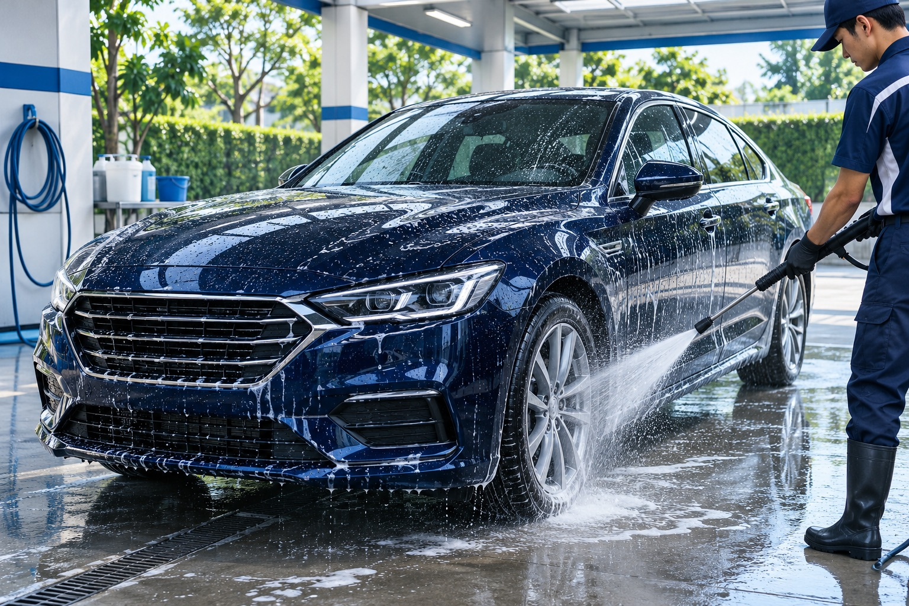

Su Arıtma
Tanklı ve tanksız su arıtma sistemi nasıl karşılaştırılır?
Kuşadası’ndaki mutfağınız için cihaz seçerken depolama alanını, anlık su ihtiyacını ve çalışma koşullarını aynı tabloda değerlendirin.
Yazıyı okuİVSU GRUP Kuşadası, Aydın
Kuşadası’nda su arıtma sistemleri ve araç yıkama hizmetleri. Eviniz ve aracınız için hizmet kapsamını inceleyin, ihtiyaçlarınızı ekibimizle paylaşın.


Evinizin su kaynağını, mutfaktaki kurulum alanını ve günlük tüketiminizi birlikte değerlendirerek sistem seçimine başlayın.

Günlük kullanımın ve sahil yolculuklarının bıraktığı kirler için dış yıkama, jant, cam ve iç alan ihtiyaçlarını birlikte değerlendirin.
İhtiyacınızı tarif etmek için evinizde veya aracınızda birkaç noktayı önceden kontrol edebilirsiniz.
Su kaynağınızı ve günlük tüketiminizi not edin. Mutfak dolabının üç boyutunu ölçün, soğuk su vanasının ve giderin yerini kontrol edin.
Kurulum hazırlığı rehberiAraçtaki kişisel eşyaları çıkarın. Kum, döşeme lekesi veya cam izi gibi önceliklerinizi belirleyin. Hassas döşeme ya da cam filmi varsa belirtin.
Temizlik kapsamı rehberi
Kuşadası ve çevresi
Davutlar’da yazlığı açarken arıtma cihazını kontrol etmek, Güzelçamlı veya Kadınlar Denizi dönüşünde araçtan kum ve tozu temizlemek için yerel rehberlerimizi kullanın.
Kuşadası rehberleriİVSU Blog
Su Arıtma
Kuşadası’ndaki mutfağınız için cihaz seçerken depolama alanını, anlık su ihtiyacını ve çalışma koşullarını aynı tabloda değerlendirin.
Yazıyı okuAraç Yıkama
Ön durulama, yüzeye uygun yıkama ve kurulama aşamalarını bilerek aracınız için kapsamı daha açık seçin.
Yazıyı oku
Araç Yıkama
Kaporta, cam, ayna ve kapı kenarlarını ayrı kontrol ederek geride kalan suyu daha kolay fark edin.
Yazıyı oku